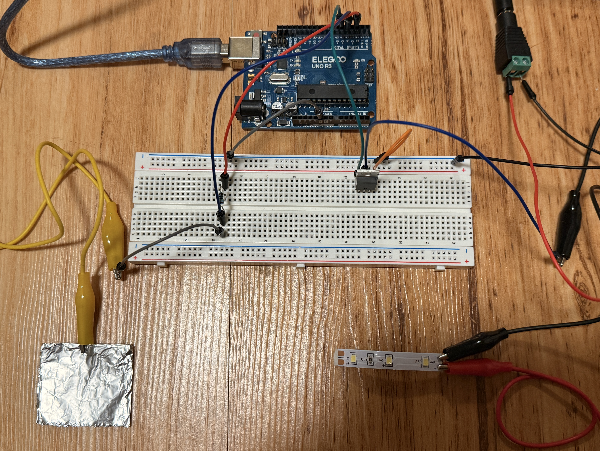
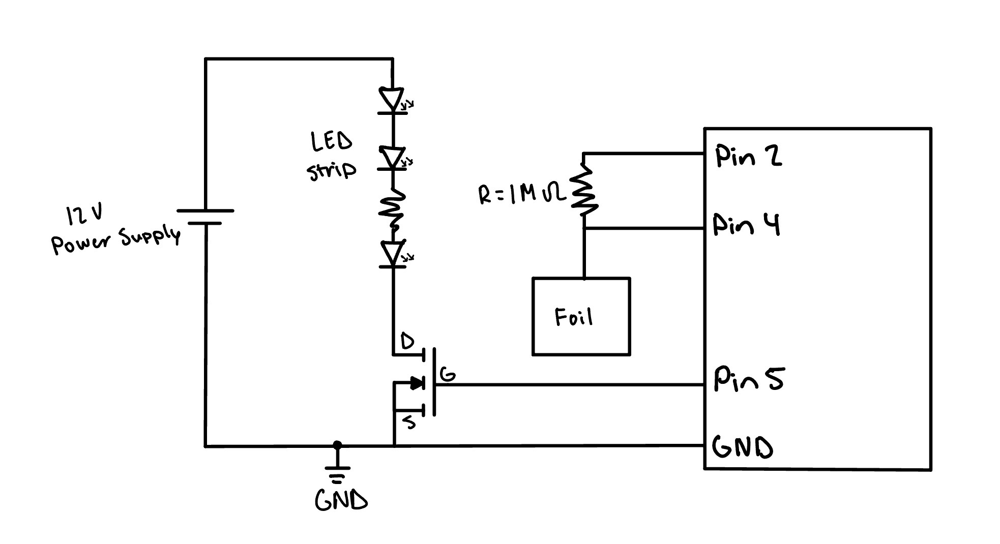
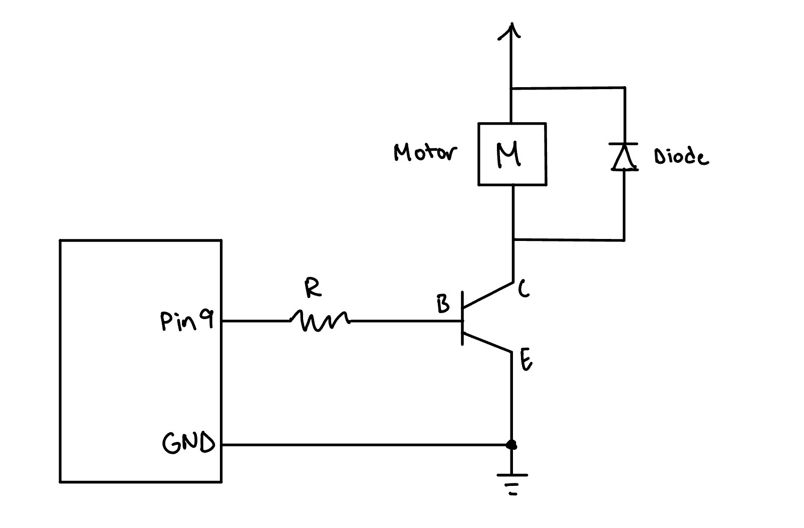
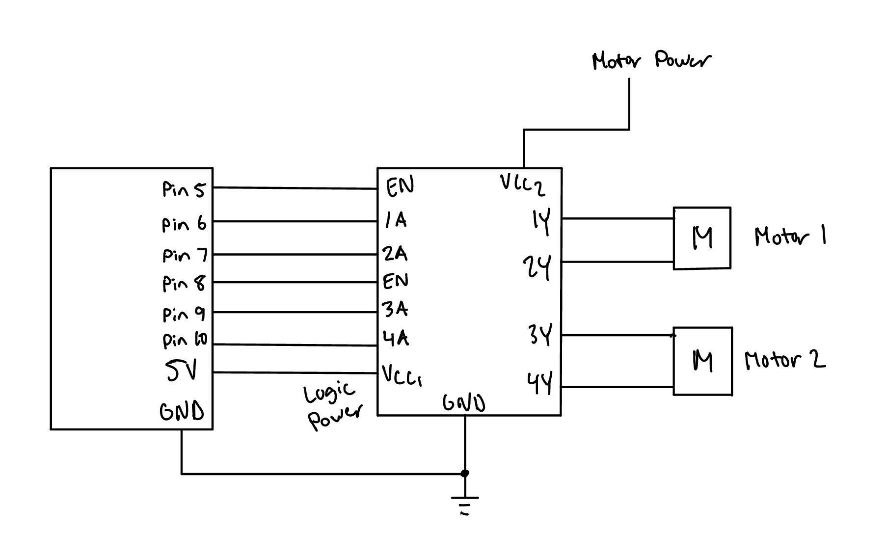

For this Assignment, I created a touch activated LED light strip controller, with the tinfoil acting as a capacitive touch sensor. Depending on the value from the capacitive touch sensor reading, that determines how bright the LED strip is. Touching the foil with more force should emit more light, while a hovering hand would emit less light.

Voltage across the resistor = 12 V - (3 x 3.3 V) = 12 V - 9.9 V = 2.1 V
I = V / R -> 2.1 V / 180 ohms; = 0.0117 A or 11.7 mA
P = V x I = 12 V x 0.0117 A = 0.14 W
Percent used = 0.0117 A / 47 A x 100 = 0.025%
The current load is far from the limit, so the transistor is safe.
I = V / R -> 5 V / 1,000,000 ohms = 5 µA
This is below the Arduino's current limit, so it is safe.
VGS -> VG - VS = 5 V - 0 V = 5 V
Vt = 1 V to 2 V (according to IRLZ44N datasheet)
VGS ≥ Vt, so the MOSFET is in saturation (acts like a short circuit)
// Implement CapitiveSense library (input)
#include <CapacitiveSensor.h>
// Set up the sensor: send pin 2, receive pin 4
CapacitiveSensor cs_s2_r4 = CapacitiveSensor(2, 4);
// Define pin to MOSFET gate
const int LED_PIN = 5;
// Readings at or below this value register as not touched
const long TOUCH_MIN = 30;
// Readings at or above this value register as a full touch
const long TOUCH_MAX = 1400;
void setup() {
// Begin Serial communication to print values
Serial.begin(9600);
// Set the MOSFET pin as an output
pinMode(LED_PIN, OUTPUT);
}
void loop() {
// Read the capacitive sensor value
long total = cs_s2_r4.capacitiveSensor(30);
// Limit sensor values to range between TOUCH_MIN and TOUCH_MAX
long sensor_range = constrain(total, TOUCH_MIN, TOUCH_MAX);
// Translate the touch range to the PWM range (0 = off, 255 = full brightness)
int brightness = map(clamped, TOUCH_MIN, TOUCH_MAX, 0, 255);
// Output PWM to the MOSFET gate to set the LED's brightness
analogWrite(LED_PIN, brightness);
// Print sensor reading to serial monitor
Serial.println(total);
// Delay by 20ms
delay(20);
}
For the IRLZ44N mosfet, the absolute maximum amount of current between pins 2 and 3 is 47 amps.


// Set up pins
Set Pin 5-10 as outputs
// Enable both motor drivers
Set Pin 5 and 8 as HIGH
// Move both motors forward
Set Pin 6 to HIGH and Pin 7 to LOW
Set Pin 9 to HIGH and Pin 10 to LOW
Add a delay
// Move both motors back
Set Pin 6 to LOW and Pin 7 to HIGH
Set Pin 9 to LOW and Pin 10 to HIGH
Add a delay
// Move motor 1 forward and motor 2 back
Set Pin 6 to HIGH and Pin 7 to LOW
Set Pin 9 to LOW and Pin 10 to HIGH
Add a delay
// Move motor 1 back and motor 2 forward
Set Pin 6 to LOW and Pin 7 to HIGH
Set Pin 9 to HIGH and Pin 10 to LOW
Add a delay